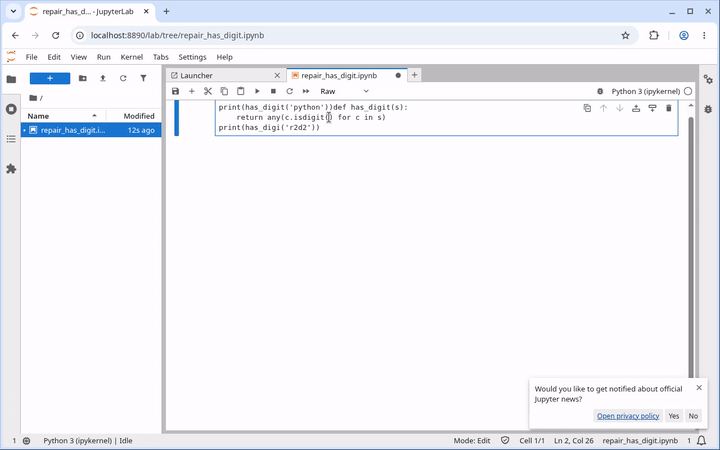
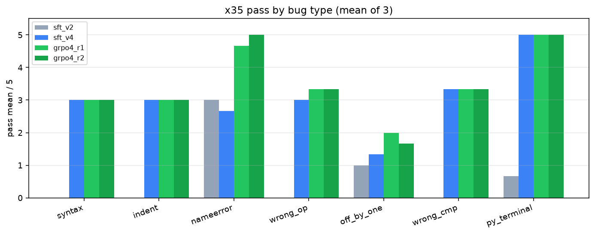
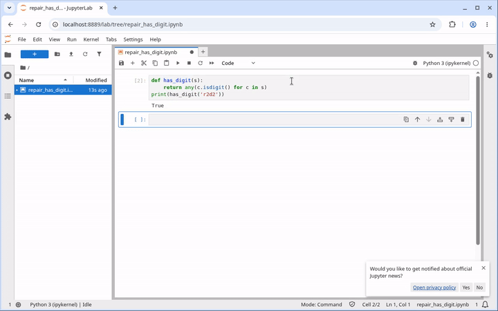
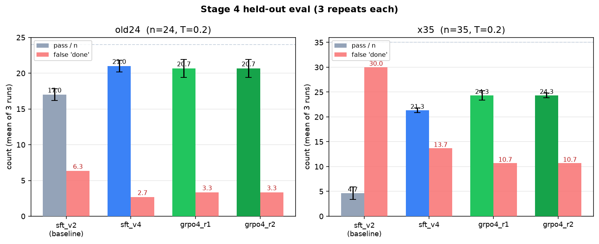

In short
(untrained → after fine-tuning)
(35-task debug set)
(on the debug set)
All numbers are the mean of 3 runs at temperature 0.2, on test sets the model never trained on.
Before and after, on the same task
The task: a notebook cell has a typo (has_digi instead of has_digit). The model has to run it, see the error, fix it, and run it again.
Sped-up, captioned comparison (about 50 seconds). The earlier model fails. The final model fixes the line and the cell prints True.
1. What I built
- Model: Qwen2.5-VL-7B, trained with LoRA (rank 16).
- Input: a screenshot of the desktop.
- Output: one UI action at a time, like a click or a keystroke.
- Goal: finish a simple coding loop in Jupyter on its own.
Every task follows the same six steps. These clips are from one held-out test task after training.
repair_has_digit.ipynb.has_digi, which doesn't exist.NameError: name 'has_digi' is not defined.has_digit.True. Done.I used Jupyter because it was the environment I could run reliably.
2. How I tested it
I froze two test sets before training and never trained on them.
Original 24
Write a new function, debug a file, handle a changed window layout, or work only in the terminal.
Debug 35
7 bug types, 5 tasks each: syntax, indentation, name errors, wrong operator, off-by-one, wrong comparison, and a Python file fixed from the terminal.
- A script checks the files on disk. For example: does the function exist, does the script print the right output?
- If the model says "done" but the check fails, it counts as a fail.
- I also count those cases on their own as false "done" reports.
- Each trained model ran each test set 3 times. I report the average.
The test files have checksums in the repo, so anyone can confirm they didn't change.
3. What was failing
- The untrained model passed 0 of 24 tasks (one earlier run).
- I recorded good examples of the loop and fine-tuned on them. That got it to 17.0 / 24.
- But on the debug set it passed only 4.7 / 35 (13%).
- And it said "done" about 30 times per run when the file was still broken.

Common mistakes
- Edited the wrong line.
- Rewrote the test instead of the code.
- Applied a fix but never reran the file.
- Saw an error and said "done" anyway.
4. What I changed
Step A: better examples to learn from
I recorded new demonstrations that follow one simple rule:
- Change only the buggy line.
- Run the file.
- Read the output.
- Stop.
- Debug set: 13% → 61% (4.7 → 21.3 out of 35).
- False "done": 30.0 → 13.7 per run.
- Original 24: 17.0 → 21.0.

Step B: reinforcement learning (GRPO)
- For each task, the model tried 8 times.
- Attempts that passed the check were pushed up.
- Failures and early quits were pushed down.
- A penalty kept it from drifting too far from the fine-tuned model.
After one round:
- Debug set: 61% → 70% (21.3 → 24.3 out of 35).
- False "done": 13.7 → 10.7 per run.
- Most of the gain was on name errors (2.7 → 4.7 out of 5).

5. Results
| Model | Original 24 | Debug 35 | False "done" (debug) |
|---|---|---|---|
| Untrained | 0 / 24 | – | – |
| First fine-tune | 17.0 / 24 (71%) | 4.7 / 35 (13%) | 30.0 |
| Better examples | 21.0 / 24 (88%) | 21.3 / 35 (61%) | 13.7 |
| One round of RL | 20.7 / 24 (86%) | 24.3 / 35 (70%) | 10.7 |
Mean of 3 runs at temperature 0.2. The untrained score is from one earlier run on the same 24 tasks.

6. What didn't work, and what's next
- RL didn't help on the original 24. It scored 20.7, a little under 21.0 from the better examples.
- A second RL round added nothing. It matched the first round on both test sets, so I stopped there.
- Some bug types are still weak. Off-by-one bugs pass only about 2 of 5.
- False "done" is lower but not gone. About 10.7 per run on the debug set.
- The biggest single jump came from better examples, not from RL.
- Everything ran in Jupyter only. Other apps and window layouts are the obvious next test.
Full recordings and files
- GitHub repo: code, frozen tests, charts.
- Full write-up (article.md).
- Detailed results, with standard deviations and per-type counts.